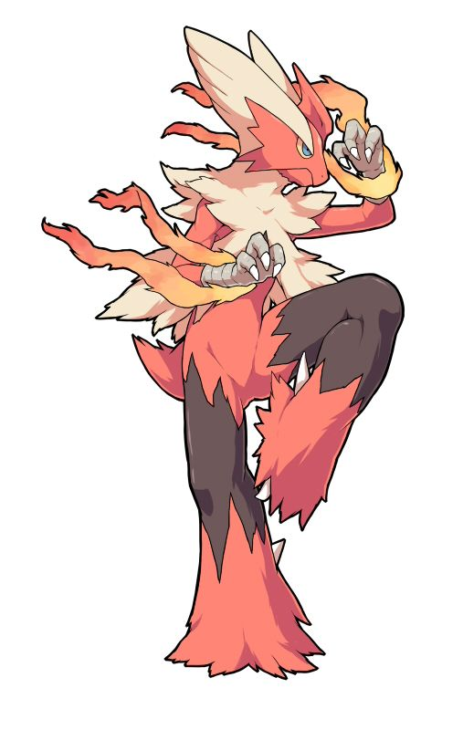

Guia dos Pokemon

Blaziken
Descrição
Blaziken é um Pokémon dos tipos Fogo/Lutador da 3ª Geração, conhecido como a forma evoluída final de Torchic e Combusken. Com aparência de galo humanoide, possui penas vermelhas e brancas, pernas poderosas capazes de saltar prédios altos e libera chamas pelos pulsos. É famoso pela sua velocidade e pela Megaevolução, Mega Blaziken.
Características Principais:
- Características Principais:
- Tipo: Fogo e Lutador (Fire/Fighting).
- Aparência: Pássaro bípepe com penas longas e ruivas, peito amarelo e uma crista em formato de "V".
- Habilidades: Conhecido pela habilidade oculta Speed Boost, que aumenta sua velocidade a cada turno.
- Ataques: Famoso por socos e chutes flamejantes, incluindo o Blaze Kick.
- Megaevolução: Utiliza a Blazikenita para se transformar em Mega Blaziken, ganhando penas pretas e maior poder.
- Altura/Peso: Aproximadamente 1.9 m e 52.0 kg.
- Blaziken é considerado um dos Pokémon mais fortes ("nível Uber") devido ao alto poder de ataque físico e velocidade crescente.